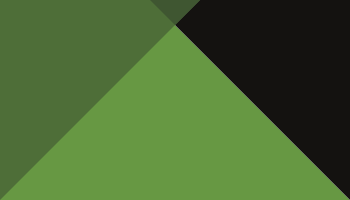
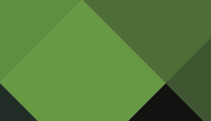
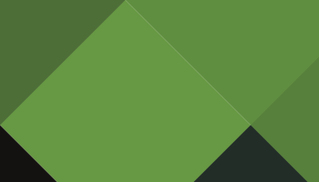
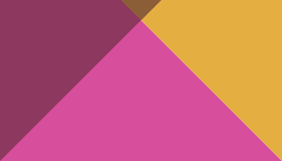
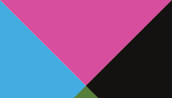
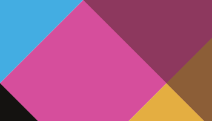
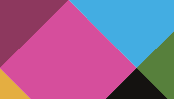

Rochenko type specimen [paratype.com, edited and recolored]
March 2021
The Beginning of Chapter Two
Dane Aleksander, art director at Animat Habitat.
The triptych with Pure Red Color, Pure Yellow Color and Pure Blue Color painted by Aleksandr Rodchenko was shown at an exhibition in Moscow in September 1921. This was a final, neutral statement on the subject of painting: three monochrome canvases painted without representation. The exhibition was titled 5×5=25, and was produced by five Russian Avant-garde artists as a conclusion to the bourgeois practice of painting. For Rodchenko and for the other four artists alike with variations on a monochrome canvas, this exhibition marked the end of painting and the beginning of a new chapter—a search for more constructive forms of art. For example, Rodchenko then turned to graphic art and photography in his commentary on the Soviet regime. For many modern critics, that exhibition in 1921 marked a shift in the history of art, and this marked departure from painting had an indirect influence on Abstract Expressionism in the 1940s and into the 1950s and so on.
5×5=25 (1921)
A century on from the then infamous exhibition in Moscow, we recall select stylistic elements from this time in art history that influenced so much of the Abstract Expressionism and Minimalism of modern art. Specifically, a selected style of lettering for use in print materials to accompany artworks exhibited as part of The beginning of painting—a collection of oil paintings and a second chapter at Animat Habitat. The design decision to appropriate lettering like this, today, will oblige a cliché – where a subject relates in some way to Soviet-era Constructivism, there is the inclination to reach for an angular block-like all-caps typeface often applied in Avant-garde posters out of early-twentieth century revolutionary Russia. While the subject of any painting for the studio exhibition is not set in a Constructivist period per say, the subject of a feature painting features an Amur tiger, a symbol of Russia with a natural connection to the Siberian taiga landscape. Moreover, the more traditional medium of oil color hearkens to an earlier era in art history—to a turning point when painting was eschewed for other forms of graphic art found to be more accessible, expressive and progressive and all that.
Animat Habitat publications will alternate between digital and traditional media. The latter will attempt to carry on tradition in some meaningful way. The beginning of painting at the studio has created an opportunity to acknowledge the influence of Constructivist artists on modern art history, their impact on civil society in Soviet Russia, and their commentary on the role of art in communication.
The use of lettering like this as part of a visual identity for scene two at Animat Habitat juxtaposes a separate, parallel path taken a hundred years ago in an alternate direction. Lettering like this relates, in some way, some ideals of Constructivism in 1920s and 1930s Russia. This project carries forward some of those ideals in context of the challenges today to reconstruct our cities to be in balance with the natural world.

Rochenko type specimen [paratype.com, recolored]
Rodchenko (Typeface)
The typeface titled Rodchenko was designed in 1996 by Russian graphic designer and type developer Tagir Safayev at ParaType. ParaType was at first a font library published in 1989 by a company called ParaGraph. Nine years later, director of the font department at ParaGraph Emil Yakupov founded the company ParaType with rights to the font library along with the name. The name itself was derived from a combination of the word ‹ παρά › with type, which can be interpreted as ‘near’ or ‘available’ typefaces. [1]
In 1997, the initial typeface design of Rodchenko was licensed to ITC and published as Stenberg, with an Inline style. Rodchenko (typeface, 1996-2002) was maintained at ParaType, appearing slightly more spaced than ITC Stenberg (typeface, 1997). The Rodchenko font family was extended with two lighter weights as well as another condensed style. The geometrical sans-serif design – with caps and small caps only – was based on the lettering of Constructivist artists in Russia in the 1920s and 1930s, namely partners Aleksandr Rodchenko and Varvara Stepanova and brothers Vladimir and George Stenberg and so on. The font was made for use in advertising and display typography. ParaType describes the letterforms as made from straight lines only. Totally simplified, this face is perceived as a symbol of Russian Avant-garde. [2-3]
Russian graphic designer and type developer Tagir Safayev worked at ParaType from 1991 until 2003. Safayev designed and developed more than one hundred fonts, most notably the Cyrillic font ITC Stenberg (1997) and its initial stencil font Rodchenko (1996-2002). In 1995, Tagir Safayev received the Rodchenko Award of the Society of Designers of Russia for Rodchenko (typeface, 1996-2002). [4]



Pine green palette and pattern for chapter two.
Pine (Color)
Font is a matter of functionality, history and style. Typography is a design space uniquely without content, wherein associations inhere within its letterforms. These associations take hold with time and with a pattern of use. A pattern can become so practiced in a culture that this practice shapes a relationship to the typeface itself. To begin the second chapter at Animat Habitat, we have a second project identity with a pattern of use for lettering and coloring.
Color is a fundamental part of each project identity at Animat Habitat. Each project color is a playful echo of the scene. The project color for scene two is Pine. The pine green echos the evergreens of the taiga—the boreal forest habitat that extends across the northern hemisphere, the largest swath of Canadian wilderness south of the tundra as well as the land of the Amur tiger.




Poster art palette and pattern for chapter two.
High-value cyan, magenta, yellow colors are designed to feature in the print materials for the exhibition. These modern colors repeat the theme… The beginning of painting. In keeping with the block shapes and vibrant palettes of Constructivist art, the use of right angles and bright colors are a means to highlight the exhibition, to stand out in a noisy marketplace and to stand apart from the Earth tones of wildlife art. In nature, lines are less exact and colors are more limited in comparison to the clarity of vector graphics and the purity of modern dyes and inks. This contrast between the art on display and the stationary on the side allows for color to remain representational and for the two art forms to appear together yet, separately, appeal to a diverse aesthetic.
“If you do a painting with five strokes instead of ten, you can make the painting sing. ”
— Tyrus Wong, Tyrus (documentary film, 2015)
A painting at Animat Habitat begins, like any art studio project, with an idea for a story about wildlife conservation. Each project is designed with medium in mind so that both art and story share a message—so that the message is clear. For example, this project is an exhibition of art with themes of Constructivism and nature, and with a collection of oil paintings about forest conservation.
Also, there are the fine art qualities that shape oil color as a medium and present another unique space for artistic expression. The use of perspective in art can express three-dimensional space on a two-dimensional plane. The physicality of painting can express a further dimension within this otherwise static visual medium. The depth and the weight of each brush stroke can impart an implicit sense of motion. The iterative process of figure on ground – dark on light and then light on dark and so on – appears as a record of movement by the painter in front of the canvas in space and in time. Oil color, in this way, can present as a dynamic medium.
And, in this way, the fine art of painting carries on at Animat Habitat.